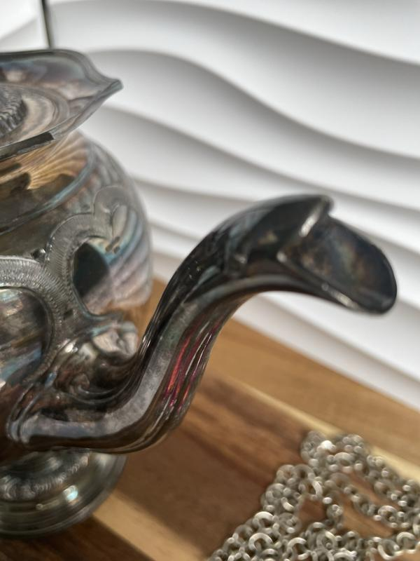
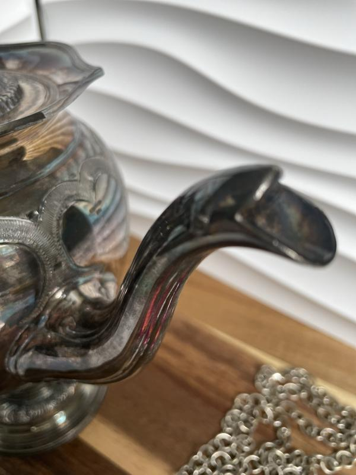

Rustic Pewter Bowl
€80.00
A rustic pewter bowl, radiating timeless charm with its subtle patina and decorative base.
This elegant piece embodies both practicality and artistry, making it an ideal addition
to traditional interiors or antique collections.
Dimensions: 25 × 25 cm
Condition: Excellent, with natural aging consistent with use.
← Back to Home
Antique French Candelabra
€150.00
A striking antique French candelabra, crafted in detailed rustic pewter.
With its elegant curved arms and ornate base, this piece exemplifies
19th-century French decorative artistry. Perfect as both a functional
candleholder and a statement piece for collectors.
Dimensions: 30 × 18 cm
Condition: Excellent, with light patina appropriate to age.
← Back to Home
Victorian Henry Wilkinson EPBM Silverplate Teapot
€120.00
An elegant Victorian teapot crafted by Henry Wilkinson & Co., Sheffield,
c.1875–1890. This heavy, high-quality piece in EPBM silverplate showcases ornate
Victorian styling with detailed spout, handle, and finial work.
A fine example of 19th-century silverware.
Dimensions: 17 × 12 cm
Condition: Excellent antique condition, with only minor age-related wear.
← Back to Home


 
